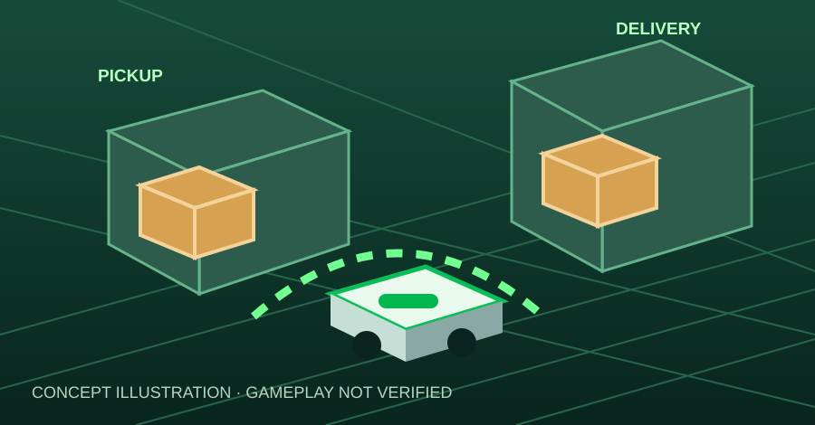

Explore Robot City
A virtual warehouse prototype in development: one city, one robot, scripted pick-up and delivery missions, and a scoring system.

Development status
Robot City is not yet verified as playable on this website or iPad. Roblox Studio playtesting has not been confirmed. This page is a development overview, not a working simulation, AI training service, or hardware integration.